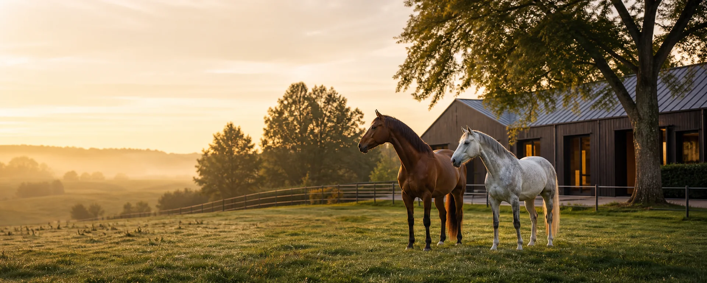

Ein Hof. Vier Bereiche.
Pferdehaltung
neu gedacht.
Eine interaktive Vision für einen modernen Reitstall und den digitalen Stallalltag.Bereich auswählen ↓Der Hof · Kurz vorgestellt
Ein guter Ort für
Pferd und Mensch.
Diese anonyme Demo verbindet pferdegerechte Haltung, verständliche Reitlehre und moderne digitale Organisation. Alle Angaben sind fiktiv — die Möglichkeiten sind es nicht.
- HaltungBewegung, Ruhe und Sozialkontakt
- GemeinschaftKlare Informationen für alle
- ZukunftDigitale Hilfe, menschlich gedacht
Direkt zum richtigen Bereich
Was möchtest du
entdecken?
Wähle einen Bereich. Auf jeder Unterseite kannst du oben direkt zu den anderen Bereichen wechseln.
01⌂
Anlage & HaltungRaum für gutes
Öffnen ↗
02♞Raum für gutes
Pferdeleben.
Boxen · Haltung · Bewegung · Ausstattung
Für EinstellerAlles Wichtige.
Öffnen ↗
03◒Alles Wichtige.
Direkt zur Hand.
Weidegang · Hufschmied · Boxenanfrage
SchulbetriebLernen mit Gefühl
Öffnen ↗
04⌁Lernen mit Gefühl
und Verstand.
Wesen des Pferdes · Reitlehre · Unterricht
DigitalesDer smarte Stall
Öffnen ↗
Der smarte Stall
von morgen.
equiio · Sensorik · Vernetzte Abläufe